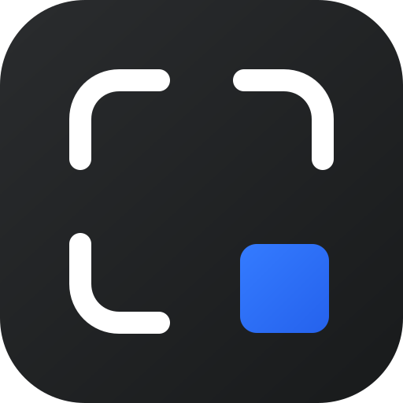

拾页
PagePick
捕获网页，收进你的设计文件
⚙
浏览器环境
Aside 浏览器
Google Chrome
Microsoft Edge
其他 Chromium 浏览器
导入到
Figma 网页端
Figma 客户端
网页端
客户端
目标设计文件
刷新列表
客户端窗口
打开多个文件时，用标题指定目标窗口。
粘贴方式
本地助手 · 自动粘贴
仅复制 · 手动粘贴
本地助手尚未检测
检测连接
自动排列
Figma 排列器插件（推荐）
不排列，只粘贴
在目标文件启动「拾页排列器」
检测插件
捕获宽度
当前宽度
1366 px
1440 px
1920 px
画板间隔
Figma 插件
px
第一张从 (0, 0) 开始，后续顶部对齐并向右排列。
下次重新从原点排列
工具与诊断
应用扩展更新
查看最近运行记录
关闭
保存设置